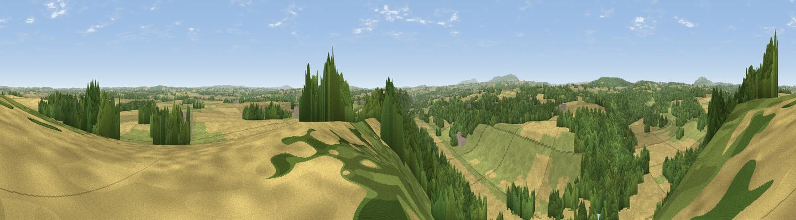

Viewpoint near Astley Abbotts
#12470 in England · top 25% of its area beats it · near Astley Abbotts · access?Where it is
The exact computed spot (SO 72725 97425). Click the marker for map links.
Public access: no public right of way or access land is recorded at this exact spot — it may be on private land. Computed from Natural England's CRoW access layer and OpenStreetMap rights of way — not the legal definitive map. Always verify locally.
The view, rendered

A 360° render of this exact spot computed from the terrain model, tree cover and land cover — summer colours, afternoon light, calibrated against photographs of famous viewpoints. Real trees, hedges and buildings will differ in detail.
The panorama
Grey silhouette: terrain skyline in each direction (720 bearings, Earth curvature and refraction included). Dashed green: skyline with trees (+15 m) and buildings (+8 m) as obstacles. Blue strip: how far the ground is visible on each bearing.
Where the view opens
Wedge length = distance to the farthest visible ground on that bearing (vegetation-aware). Rings at 10, 25 and 50 km.
What fills the view
40% cropland · 37% woodland · 21% grassland · 2% water · 1% built-up
Angular shares of the visible panorama (visual magnitude), not map area. Landscape diversity 0.51 (0–1 Shannon).
Key numbers
More beautiful places nearby
The staircase of upgrades: each row has a higher view potential than everything closer. Driving times are estimates from straight-line distance, calibrated against real road routing — check an actual route before setting out.
| Place | Direction | Drive | Score |
|---|---|---|---|
| Apley Terrace | NNW · 1 km | ~2 min | 65.1 |
| Viewpoint near Much Wenlock | WNW · 9 km | ~18 min | 69.2 |
| Viewpoint near Homer | WNW · 11 km | ~21 min | 71.9 |
| Viewpoint near Homer | WNW · 12 km | ~22 min | 74.5 |
| Viewpoint near Harley | W · 13 km | ~23 min | 79.9 |
| The Wrekin | NW · 15 km | ~26 min | 85.0 |
| Viewpoint near Little Wenlock | NW · 15 km | ~26 min | 86.6 |
| North Hill | S · 51 km | ~72 min | 86.8 |
52.57395, -2.40389 · source: screening · position refined by local search. Computed location — check access rights before visiting.